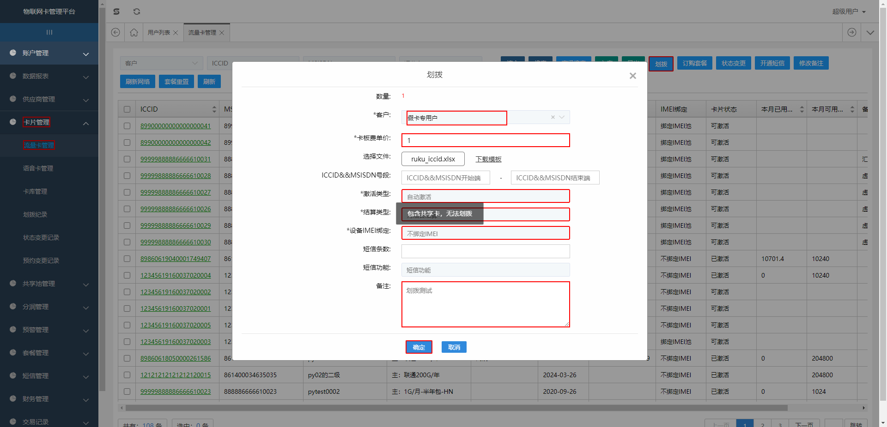
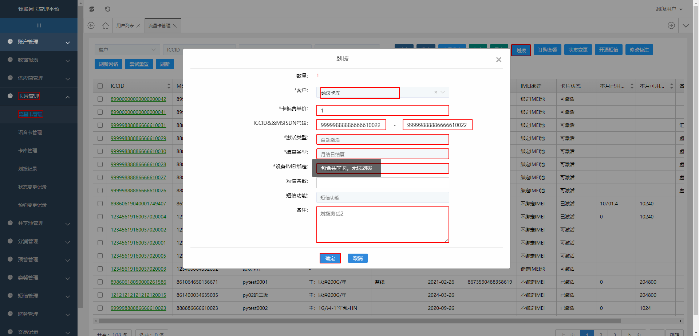
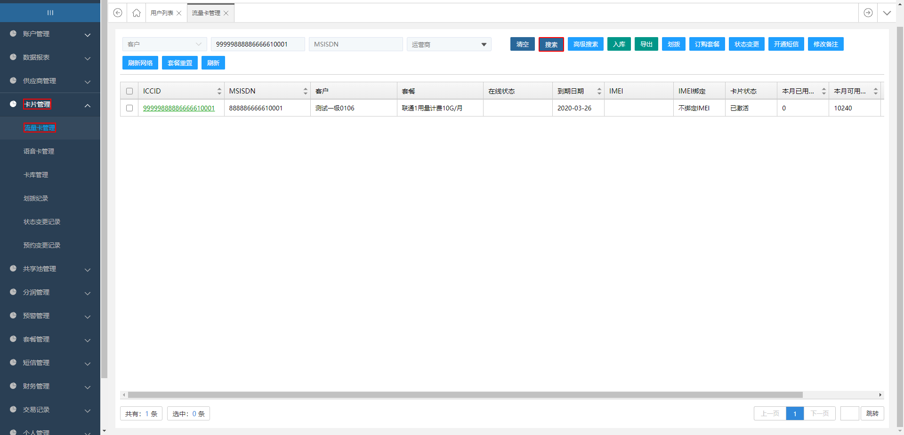

Report generated on 10-Mar-2020 at 09:03:53 by pytest-html v2.0.1
| JAVA_HOME | C:\Program Files\Java\jdk1.8.0_191 |
| Packages | {'pytest': '5.3.2', 'py': '1.8.0', 'pluggy': '0.13.1'} |
| Platform | Windows-10-10.0.17134-SP0 |
| Plugins | {'html': '2.0.1', 'metadata': '1.8.0', 'parallel': '0.0.10', 'rerunfailures': '7.0'} |
| Python | 3.7.4 |
7 tests ran in 125.25 seconds.
(Un)check the boxes to filter the results.
4 passed, 0 skipped, 3 failed, 0 errors, 0 expected failures, 0 unexpected passes, 3 rerun| Result | Test | Description | Duration |
|---|---|---|---|
| No results found. Try to check the filters | |||
| Failed | test_dir/test_flow_card_manage.py::TestHuabo::test__huabo1[case1] |
划拨-文件方式
|
3.25 |
|
 self = <test_dir.test_flow_card_manage.TestHuabo object at 0x000001B901424688> browser = <selenium.webdriver.chrome.webdriver.WebDriver (session="71668e94352786cf4cfe1a9ec5f1be65")>, login_m = None price = '1', activetype = '自动激活', settlementType = '月结日结算', imei = '不绑定IMEI', mark = '划拨测试' @pytest.mark.parametrize( "price,activetype, settlementType,imei,mark", [("1","自动激活", "月结日结算","不绑定IMEI","划拨测试") ], ids=["case1"]) def test__huabo1(self,browser,login_m,price,activetype,settlementType,imei,mark): ''' 划拨-文件方式 ''' fh = FlowCardManage(browser) sleep(1) fh.card_manage.click() fh.flow_card_manage.click() fh.transferring.click() #划拨到假卡专用户 fh.hbcustomername.click() fh.hbtestcustomer.click() fh.hbprice=(price) fh.hbFile.send_keys(iccid_path) Select(fh.hbactivetype).select_by_visible_text(activetype) Select(fh.hbsettlementType).select_by_visible_text(settlementType) Select(fh.hbimeiBind).select_by_visible_text(imei) fh.hbRemark=(mark) fh.huaboSave.click() # 执行SQL语句 sql=''' SELECT customer_name FROM `t_customer` t1 left join t_hierarchy t2 on substring_index( t2.hierarchy_code, "_",- 1 ) = t1.uuid where t2.iccid_ = '%s' ''' data=(we.get_some(iccid_path)) self.customername = mq.execQuery(sql % data) > assert self.customername[0][0] == "假卡专用户" E AssertionError: assert '一级客户' == '假卡专用户' E - 一级客户 E + 假卡专用户 test_dir\test_flow_card_manage.py:119: AssertionError -------------------------------Captured log setup------------------------------- INFO poium.page_objects:page_objects.py:128 1 times search, ('id', 'lg_user_input') INFO poium.page_objects:page_objects.py:128 1 times search, ('id', 'lg_pw_input') INFO poium.page_objects:page_objects.py:128 1 times search, ('id', 'login') -------------------------------Captured log call-------------------------------- INFO poium.page_objects:page_objects.py:128 1 times search, ('xpath', "//*[text()='卡片管理']") INFO poium.page_objects:page_objects.py:128 1 times search, ('xpath', "//*[text()='流量卡管理']") INFO poium.page_objects:page_objects.py:128 1 times search, ('name', 'reflesh1') INFO poium.page_objects:page_objects.py:128 1 times search, ('xpath', "//*[@id='selectWrap']/div/div/div/span") INFO poium.page_objects:page_objects.py:128 1 times search, ('xpath', "//*[@code='eOW1D05c6QmSKal0pxVIG1Vui1xkNFBg']") INFO poium.page_objects:page_objects.py:128 1 times search, ('id', 'cardUnitPrice') INFO poium.page_objects:page_objects.py:128 1 times search, ('id', 'huaboFile') INFO poium.page_objects:page_objects.py:128 1 times search, ('id', 'huaboActive') INFO poium.page_objects:page_objects.py:128 1 times search, ('id', 'settlementType') INFO poium.page_objects:page_objects.py:128 1 times search, ('id', '_m2mC_imeiBind') INFO poium.page_objects:page_objects.py:128 1 times search, ('id', 'huaboRemark1') INFO poium.page_objects:page_objects.py:128 1 times search, ('id', 'huaboSave') -------------------------------Captured log setup------------------------------- INFO poium.page_objects:page_objects.py:128 1 times search, ('id', 'lg_user_input') INFO poium.page_objects:page_objects.py:128 1 times search, ('id', 'lg_pw_input') INFO poium.page_objects:page_objects.py:128 1 times search, ('id', 'login') -------------------------------Captured log call-------------------------------- INFO poium.page_objects:page_objects.py:128 1 times search, ('xpath', "//*[text()='卡片管理']") INFO poium.page_objects:page_objects.py:128 1 times search, ('xpath', "//*[text()='流量卡管理']") INFO poium.page_objects:page_objects.py:128 1 times search, ('name', 'reflesh1') INFO poium.page_objects:page_objects.py:128 1 times search, ('xpath', "//*[@id='selectWrap']/div/div/div/span") INFO poium.page_objects:page_objects.py:128 1 times search, ('xpath', "//*[@code='eOW1D05c6QmSKal0pxVIG1Vui1xkNFBg']") INFO poium.page_objects:page_objects.py:128 1 times search, ('id', 'cardUnitPrice') INFO poium.page_objects:page_objects.py:128 1 times search, ('id', 'huaboFile') INFO poium.page_objects:page_objects.py:128 1 times search, ('id', 'huaboActive') INFO poium.page_objects:page_objects.py:128 1 times search, ('id', 'settlementType') INFO poium.page_objects:page_objects.py:128 1 times search, ('id', '_m2mC_imeiBind') INFO poium.page_objects:page_objects.py:128 1 times search, ('id', 'huaboRemark1') INFO poium.page_objects:page_objects.py:128 1 times search, ('id', 'huaboSave') | |||
| Failed | test_dir/test_flow_card_manage.py::TestHuabo::test__huabo2[case1] |
回划硕汉卡库,按iccid开始结束段
|
4.43 |
|
 self = <test_dir.test_flow_card_manage.TestHuabo object at 0x000001B901593308> browser = <selenium.webdriver.chrome.webdriver.WebDriver (session="71668e94352786cf4cfe1a9ec5f1be65")>, login_m = None price1 = '1', activetype1 = '自动激活', settlementType1 = '月结日结算', imei1 = '不绑定IMEI', mark1 = '划拨测试2' @pytest.mark.parametrize( "price1,activetype1, settlementType1,imei1,mark1", [("1","自动激活", "月结日结算","不绑定IMEI","划拨测试2") ], ids=["case1"]) def test__huabo2(self, browser,login_m, price1, activetype1, settlementType1, imei1, mark1): ''' 回划硕汉卡库,按iccid开始结束段 ''' sql_a = ''' SELECT customer_name FROM `t_customer` t1 left join t_hierarchy t2 on substring_index( t2.hierarchy_code, "_",- 1 ) = t1.uuid where t2.iccid_ = '%s' ''' sql_b = ''' SELECT remark FROM `t_card_store` where iccid = '%s' ''' #获取到卡号iccid data = (we.get_some(iccid_path)) fh = FlowCardManage(browser) sleep(1) fh.card_manage.click() fh.flow_card_manage.click() fh.transferring.click() fh.hbcustomername.click() # 划拨回硕汉卡库 fh.hbtestcustomer1.click() fh.hbprice = (price1) fh.starticcid=(data) fh.endiccid=(data) Select(fh.hbactivetype).select_by_visible_text(activetype1) Select(fh.hbsettlementType).select_by_visible_text(settlementType1) Select(fh.hbimeiBind).select_by_visible_text(imei1) fh.hbRemark = (mark1) fh.huaboSave.click() self.customername = mq.execQuery(sql_a % data) self.test_mark=mq.execQuery(sql_b % data) > assert self.customername[0][0] == "硕汉卡库" and self.test_mark[0][0] == mark1 E AssertionError: assert ('一级客户' == '硕汉卡库' E - 一级客户 E + 硕汉卡库) test_dir\test_flow_card_manage.py:162: AssertionError -------------------------------Captured log setup------------------------------- INFO poium.page_objects:page_objects.py:128 1 times search, ('id', 'lg_user_input') INFO poium.page_objects:page_objects.py:128 1 times search, ('id', 'lg_pw_input') INFO poium.page_objects:page_objects.py:128 1 times search, ('id', 'login') -------------------------------Captured log call-------------------------------- INFO poium.page_objects:page_objects.py:128 1 times search, ('xpath', "//*[text()='卡片管理']") INFO poium.page_objects:page_objects.py:128 1 times search, ('xpath', "//*[text()='流量卡管理']") INFO poium.page_objects:page_objects.py:128 1 times search, ('name', 'reflesh1') INFO poium.page_objects:page_objects.py:128 1 times search, ('xpath', "//*[@id='selectWrap']/div/div/div/span") INFO poium.page_objects:page_objects.py:128 1 times search, ('xpath', "//*[@code='3ZyHgdEKiSAu0mVkgszcdV25tN0lZ8uM']") INFO poium.page_objects:page_objects.py:128 1 times search, ('id', 'cardUnitPrice') INFO poium.page_objects:page_objects.py:128 1 times search, ('id', 'mfi_minIccid') INFO poium.page_objects:page_objects.py:128 1 times search, ('id', 'mfi_maxIccid') INFO poium.page_objects:page_objects.py:128 1 times search, ('id', 'huaboActive') INFO poium.page_objects:page_objects.py:128 1 times search, ('id', 'settlementType') INFO poium.page_objects:page_objects.py:128 1 times search, ('id', '_m2mC_imeiBind') INFO poium.page_objects:page_objects.py:128 1 times search, ('id', 'huaboRemark1') INFO poium.page_objects:page_objects.py:128 1 times search, ('id', 'huaboSave') -------------------------------Captured log setup------------------------------- INFO poium.page_objects:page_objects.py:128 1 times search, ('id', 'lg_user_input') INFO poium.page_objects:page_objects.py:128 1 times search, ('id', 'lg_pw_input') INFO poium.page_objects:page_objects.py:128 1 times search, ('id', 'login') -------------------------------Captured log call-------------------------------- INFO poium.page_objects:page_objects.py:128 1 times search, ('xpath', "//*[text()='卡片管理']") INFO poium.page_objects:page_objects.py:128 1 times search, ('xpath', "//*[text()='流量卡管理']") INFO poium.page_objects:page_objects.py:128 1 times search, ('name', 'reflesh1') INFO poium.page_objects:page_objects.py:128 1 times search, ('xpath', "//*[@id='selectWrap']/div/div/div/span") INFO poium.page_objects:page_objects.py:128 1 times search, ('xpath', "//*[@code='3ZyHgdEKiSAu0mVkgszcdV25tN0lZ8uM']") INFO poium.page_objects:page_objects.py:128 1 times search, ('id', 'cardUnitPrice') INFO poium.page_objects:page_objects.py:128 1 times search, ('id', 'mfi_minIccid') INFO poium.page_objects:page_objects.py:128 1 times search, ('id', 'mfi_maxIccid') INFO poium.page_objects:page_objects.py:128 1 times search, ('id', 'huaboActive') INFO poium.page_objects:page_objects.py:128 1 times search, ('id', 'settlementType') INFO poium.page_objects:page_objects.py:128 1 times search, ('id', '_m2mC_imeiBind') INFO poium.page_objects:page_objects.py:128 1 times search, ('id', 'huaboRemark1') INFO poium.page_objects:page_objects.py:128 1 times search, ('id', 'huaboSave') | |||
| Failed | test_dir/test_flow_card_manage.py::TestSearch::test_search_by_iccid |
搜索--ICCID
|
26.71 |
|
 self = <test_dir.test_flow_card_manage.TestSearch object at 0x000001B9015A3DC8> browser = <selenium.webdriver.chrome.webdriver.WebDriver (session="71668e94352786cf4cfe1a9ec5f1be65")>, login_m = None def test_search_by_iccid(self,browser,login_m): ''' 搜索--ICCID ''' iccid = "99999888886666610001" fs=FlowCardManage(browser) fs.card_manage.click() fs.flow_card_manage.click() fs.searchiccid=(iccid) fs.search.click() #结果列表的客户名称 > text= fs.s_cusname.text E AttributeError: 'NoneType' object has no attribute 'text' test_dir\test_flow_card_manage.py:202: AttributeError -------------------------------Captured log setup------------------------------- INFO poium.page_objects:page_objects.py:128 1 times search, ('id', 'lg_user_input') INFO poium.page_objects:page_objects.py:128 1 times search, ('id', 'lg_pw_input') INFO poium.page_objects:page_objects.py:128 1 times search, ('id', 'login') -------------------------------Captured log call-------------------------------- INFO poium.page_objects:page_objects.py:128 1 times search, ('xpath', "//*[text()='卡片管理']") INFO poium.page_objects:page_objects.py:128 1 times search, ('xpath', "//*[text()='流量卡管理']") INFO poium.page_objects:page_objects.py:128 1 times search, ('name', 'iccidOrMsisdn') INFO poium.page_objects:page_objects.py:128 1 times search, ('name', '搜索') INFO poium.page_objects:page_objects.py:128 1 times search, ('xpath', '//li[@name="customerName"][@title="假卡专用户"]') INFO poium.page_objects:page_objects.py:128 2 times search, ('xpath', '//li[@name="customerName"][@title="假卡专用户"]') INFO poium.page_objects:page_objects.py:128 3 times search, ('xpath', '//li[@name="customerName"][@title="假卡专用户"]') INFO poium.page_objects:page_objects.py:128 4 times search, ('xpath', '//li[@name="customerName"][@title="假卡专用户"]') -------------------------------Captured log setup------------------------------- INFO poium.page_objects:page_objects.py:128 1 times search, ('id', 'lg_user_input') INFO poium.page_objects:page_objects.py:128 1 times search, ('id', 'lg_pw_input') INFO poium.page_objects:page_objects.py:128 1 times search, ('id', 'login') -------------------------------Captured log call-------------------------------- INFO poium.page_objects:page_objects.py:128 1 times search, ('xpath', "//*[text()='卡片管理']") INFO poium.page_objects:page_objects.py:128 1 times search, ('xpath', "//*[text()='流量卡管理']") INFO poium.page_objects:page_objects.py:128 1 times search, ('name', 'iccidOrMsisdn') INFO poium.page_objects:page_objects.py:128 1 times search, ('name', '搜索') INFO poium.page_objects:page_objects.py:128 1 times search, ('xpath', '//li[@name="customerName"][@title="假卡专用户"]') INFO poium.page_objects:page_objects.py:128 2 times search, ('xpath', '//li[@name="customerName"][@title="假卡专用户"]') INFO poium.page_objects:page_objects.py:128 3 times search, ('xpath', '//li[@name="customerName"][@title="假卡专用户"]') INFO poium.page_objects:page_objects.py:128 4 times search, ('xpath', '//li[@name="customerName"][@title="假卡专用户"]') | |||
| Rerun | test_dir/test_flow_card_manage.py::TestHuabo::test__huabo1[case1] |
划拨-文件方式
|
4.63 |
|
self = <test_dir.test_flow_card_manage.TestHuabo object at 0x000001B901416748> browser = <selenium.webdriver.chrome.webdriver.WebDriver (session="71668e94352786cf4cfe1a9ec5f1be65")>, login_m = None price = '1', activetype = '自动激活', settlementType = '月结日结算', imei = '不绑定IMEI', mark = '划拨测试' @pytest.mark.parametrize( "price,activetype, settlementType,imei,mark", [("1","自动激活", "月结日结算","不绑定IMEI","划拨测试") ], ids=["case1"]) def test__huabo1(self,browser,login_m,price,activetype,settlementType,imei,mark): ''' 划拨-文件方式 ''' fh = FlowCardManage(browser) sleep(1) fh.card_manage.click() fh.flow_card_manage.click() fh.transferring.click() #划拨到假卡专用户 fh.hbcustomername.click() fh.hbtestcustomer.click() fh.hbprice=(price) fh.hbFile.send_keys(iccid_path) Select(fh.hbactivetype).select_by_visible_text(activetype) Select(fh.hbsettlementType).select_by_visible_text(settlementType) Select(fh.hbimeiBind).select_by_visible_text(imei) fh.hbRemark=(mark) fh.huaboSave.click() # 执行SQL语句 sql=''' SELECT customer_name FROM `t_customer` t1 left join t_hierarchy t2 on substring_index( t2.hierarchy_code, "_",- 1 ) = t1.uuid where t2.iccid_ = '%s' ''' data=(we.get_some(iccid_path)) self.customername = mq.execQuery(sql % data) > assert self.customername[0][0] == "假卡专用户" E AssertionError: assert '一级客户' == '假卡专用户' E - 一级客户 E + 假卡专用户 test_dir\test_flow_card_manage.py:119: AssertionError -------------------------------Captured log setup------------------------------- INFO poium.page_objects:page_objects.py:128 1 times search, ('id', 'lg_user_input') INFO poium.page_objects:page_objects.py:128 1 times search, ('id', 'lg_pw_input') INFO poium.page_objects:page_objects.py:128 1 times search, ('id', 'login') -------------------------------Captured log call-------------------------------- INFO poium.page_objects:page_objects.py:128 1 times search, ('xpath', "//*[text()='卡片管理']") INFO poium.page_objects:page_objects.py:128 1 times search, ('xpath', "//*[text()='流量卡管理']") INFO poium.page_objects:page_objects.py:128 1 times search, ('name', 'reflesh1') INFO poium.page_objects:page_objects.py:128 1 times search, ('xpath', "//*[@id='selectWrap']/div/div/div/span") INFO poium.page_objects:page_objects.py:128 1 times search, ('xpath', "//*[@code='eOW1D05c6QmSKal0pxVIG1Vui1xkNFBg']") INFO poium.page_objects:page_objects.py:128 1 times search, ('id', 'cardUnitPrice') INFO poium.page_objects:page_objects.py:128 1 times search, ('id', 'huaboFile') INFO poium.page_objects:page_objects.py:128 1 times search, ('id', 'huaboActive') INFO poium.page_objects:page_objects.py:128 1 times search, ('id', 'settlementType') INFO poium.page_objects:page_objects.py:128 1 times search, ('id', '_m2mC_imeiBind') INFO poium.page_objects:page_objects.py:128 1 times search, ('id', 'huaboRemark1') INFO poium.page_objects:page_objects.py:128 1 times search, ('id', 'huaboSave') | |||
| Rerun | test_dir/test_flow_card_manage.py::TestHuabo::test__huabo2[case1] |
回划硕汉卡库,按iccid开始结束段
|
4.51 |
|
self = <test_dir.test_flow_card_manage.TestHuabo object at 0x000001B9014F1B08> browser = <selenium.webdriver.chrome.webdriver.WebDriver (session="71668e94352786cf4cfe1a9ec5f1be65")>, login_m = None price1 = '1', activetype1 = '自动激活', settlementType1 = '月结日结算', imei1 = '不绑定IMEI', mark1 = '划拨测试2' @pytest.mark.parametrize( "price1,activetype1, settlementType1,imei1,mark1", [("1","自动激活", "月结日结算","不绑定IMEI","划拨测试2") ], ids=["case1"]) def test__huabo2(self, browser,login_m, price1, activetype1, settlementType1, imei1, mark1): ''' 回划硕汉卡库,按iccid开始结束段 ''' sql_a = ''' SELECT customer_name FROM `t_customer` t1 left join t_hierarchy t2 on substring_index( t2.hierarchy_code, "_",- 1 ) = t1.uuid where t2.iccid_ = '%s' ''' sql_b = ''' SELECT remark FROM `t_card_store` where iccid = '%s' ''' #获取到卡号iccid data = (we.get_some(iccid_path)) fh = FlowCardManage(browser) sleep(1) fh.card_manage.click() fh.flow_card_manage.click() fh.transferring.click() fh.hbcustomername.click() # 划拨回硕汉卡库 fh.hbtestcustomer1.click() fh.hbprice = (price1) fh.starticcid=(data) fh.endiccid=(data) Select(fh.hbactivetype).select_by_visible_text(activetype1) Select(fh.hbsettlementType).select_by_visible_text(settlementType1) Select(fh.hbimeiBind).select_by_visible_text(imei1) fh.hbRemark = (mark1) fh.huaboSave.click() self.customername = mq.execQuery(sql_a % data) self.test_mark=mq.execQuery(sql_b % data) > assert self.customername[0][0] == "硕汉卡库" and self.test_mark[0][0] == mark1 E AssertionError: assert ('一级客户' == '硕汉卡库' E - 一级客户 E + 硕汉卡库) test_dir\test_flow_card_manage.py:162: AssertionError -------------------------------Captured log setup------------------------------- INFO poium.page_objects:page_objects.py:128 1 times search, ('id', 'lg_user_input') INFO poium.page_objects:page_objects.py:128 1 times search, ('id', 'lg_pw_input') INFO poium.page_objects:page_objects.py:128 1 times search, ('id', 'login') -------------------------------Captured log call-------------------------------- INFO poium.page_objects:page_objects.py:128 1 times search, ('xpath', "//*[text()='卡片管理']") INFO poium.page_objects:page_objects.py:128 1 times search, ('xpath', "//*[text()='流量卡管理']") INFO poium.page_objects:page_objects.py:128 1 times search, ('name', 'reflesh1') INFO poium.page_objects:page_objects.py:128 1 times search, ('xpath', "//*[@id='selectWrap']/div/div/div/span") INFO poium.page_objects:page_objects.py:128 1 times search, ('xpath', "//*[@code='3ZyHgdEKiSAu0mVkgszcdV25tN0lZ8uM']") INFO poium.page_objects:page_objects.py:128 1 times search, ('id', 'cardUnitPrice') INFO poium.page_objects:page_objects.py:128 1 times search, ('id', 'mfi_minIccid') INFO poium.page_objects:page_objects.py:128 1 times search, ('id', 'mfi_maxIccid') INFO poium.page_objects:page_objects.py:128 1 times search, ('id', 'huaboActive') INFO poium.page_objects:page_objects.py:128 1 times search, ('id', 'settlementType') INFO poium.page_objects:page_objects.py:128 1 times search, ('id', '_m2mC_imeiBind') INFO poium.page_objects:page_objects.py:128 1 times search, ('id', 'huaboRemark1') INFO poium.page_objects:page_objects.py:128 1 times search, ('id', 'huaboSave') | |||
| Rerun | test_dir/test_flow_card_manage.py::TestSearch::test_search_by_iccid |
搜索--ICCID
|
26.74 |
|
self = <test_dir.test_flow_card_manage.TestSearch object at 0x000001B901514F08> browser = <selenium.webdriver.chrome.webdriver.WebDriver (session="71668e94352786cf4cfe1a9ec5f1be65")>, login_m = None def test_search_by_iccid(self,browser,login_m): ''' 搜索--ICCID ''' iccid = "99999888886666610001" fs=FlowCardManage(browser) fs.card_manage.click() fs.flow_card_manage.click() fs.searchiccid=(iccid) fs.search.click() #结果列表的客户名称 > text= fs.s_cusname.text E AttributeError: 'NoneType' object has no attribute 'text' test_dir\test_flow_card_manage.py:202: AttributeError -------------------------------Captured log setup------------------------------- INFO poium.page_objects:page_objects.py:128 1 times search, ('id', 'lg_user_input') INFO poium.page_objects:page_objects.py:128 1 times search, ('id', 'lg_pw_input') INFO poium.page_objects:page_objects.py:128 1 times search, ('id', 'login') -------------------------------Captured log call-------------------------------- INFO poium.page_objects:page_objects.py:128 1 times search, ('xpath', "//*[text()='卡片管理']") INFO poium.page_objects:page_objects.py:128 1 times search, ('xpath', "//*[text()='流量卡管理']") INFO poium.page_objects:page_objects.py:128 1 times search, ('name', 'iccidOrMsisdn') INFO poium.page_objects:page_objects.py:128 1 times search, ('name', '搜索') INFO poium.page_objects:page_objects.py:128 1 times search, ('xpath', '//li[@name="customerName"][@title="假卡专用户"]') INFO poium.page_objects:page_objects.py:128 2 times search, ('xpath', '//li[@name="customerName"][@title="假卡专用户"]') INFO poium.page_objects:page_objects.py:128 3 times search, ('xpath', '//li[@name="customerName"][@title="假卡专用户"]') INFO poium.page_objects:page_objects.py:128 4 times search, ('xpath', '//li[@name="customerName"][@title="假卡专用户"]') | |||
| Passed | test_dir/test_customerlist.py::TestCustomerList::test_add_customer[case1] |
添加一级客户
|
9.62 |
|
-------------------------------Captured log setup------------------------------- INFO poium.page_objects:page_objects.py:128 1 times search, ('id', 'lg_user_input') INFO poium.page_objects:page_objects.py:128 1 times search, ('id', 'lg_pw_input') INFO poium.page_objects:page_objects.py:128 1 times search, ('id', 'login') -------------------------------Captured log call-------------------------------- INFO poium.page_objects:page_objects.py:128 1 times search, ('xpath', '/html/body/div/div[1]/div/div[4]/div[1]/div[2]/p') INFO poium.page_objects:page_objects.py:128 1 times search, ('name', 'add') INFO poium.page_objects:page_objects.py:128 1 times search, ('xpath', '//*[@name="customerName"]/div[2]/input') INFO poium.page_objects:page_objects.py:128 1 times search, ('xpath', '//*[@name="phone"]/div[2]/input') INFO poium.page_objects:page_objects.py:128 1 times search, ('xpath', '//*[@name="region"]/div[2]/input') INFO poium.page_objects:page_objects.py:128 1 times search, ('xpath', '//*[@name="level"]/span') INFO poium.page_objects:page_objects.py:128 1 times search, ('xpath', '//*[@name="level"]/div[1]/p[2]') INFO poium.page_objects:page_objects.py:128 1 times search, ('xpath', '//*[@name="payType"]/span') INFO poium.page_objects:page_objects.py:128 1 times search, ('xpath', '//*[@name="payType"]/div/p[3]') | |||
| Passed | test_dir/test_customerlist.py::TestCustomerList::test_add_customer[case2] |
添加一级客户
|
9.64 |
|
-------------------------------Captured log setup------------------------------- INFO poium.page_objects:page_objects.py:128 1 times search, ('id', 'lg_user_input') INFO poium.page_objects:page_objects.py:128 1 times search, ('id', 'lg_pw_input') INFO poium.page_objects:page_objects.py:128 1 times search, ('id', 'login') -------------------------------Captured log call-------------------------------- INFO poium.page_objects:page_objects.py:128 1 times search, ('xpath', '/html/body/div/div[1]/div/div[4]/div[1]/div[2]/p') INFO poium.page_objects:page_objects.py:128 1 times search, ('name', 'add') INFO poium.page_objects:page_objects.py:128 1 times search, ('xpath', '//*[@name="customerName"]/div[2]/input') INFO poium.page_objects:page_objects.py:128 1 times search, ('xpath', '//*[@name="phone"]/div[2]/input') INFO poium.page_objects:page_objects.py:128 1 times search, ('xpath', '//*[@name="region"]/div[2]/input') INFO poium.page_objects:page_objects.py:128 1 times search, ('xpath', '//*[@name="level"]/span') INFO poium.page_objects:page_objects.py:128 1 times search, ('xpath', '//*[@name="level"]/div[1]/p[2]') INFO poium.page_objects:page_objects.py:128 1 times search, ('xpath', '//*[@name="payType"]/span') INFO poium.page_objects:page_objects.py:128 1 times search, ('xpath', '//*[@name="payType"]/div/p[3]') | |||
| Passed | test_dir/test_flow_card_manage.py::TestRuku::test_ruku[1-广东联通2-2-3-广东联通2用量计费套餐-测试入库---S2] |
入库
|
8.34 |
|
-------------------------------Captured log setup------------------------------- INFO poium.page_objects:page_objects.py:128 1 times search, ('id', 'lg_user_input') INFO poium.page_objects:page_objects.py:128 1 times search, ('id', 'lg_pw_input') INFO poium.page_objects:page_objects.py:128 1 times search, ('id', 'login') -------------------------------Captured log call-------------------------------- INFO poium.page_objects:page_objects.py:128 1 times search, ('xpath', "//*[text()='卡片管理']") INFO poium.page_objects:page_objects.py:128 1 times search, ('xpath', "//*[text()='流量卡管理']") INFO poium.page_objects:page_objects.py:128 1 times search, ('name', 'reflesh3') INFO poium.page_objects:page_objects.py:128 1 times search, ('id', 'supplierUuid') INFO poium.page_objects:page_objects.py:128 1 times search, ('id', 'businessType') INFO poium.page_objects:page_objects.py:128 1 times search, ('id', 'cardSize') INFO poium.page_objects:page_objects.py:128 1 times search, ('id', 'expensesPlanCode') INFO poium.page_objects:page_objects.py:128 1 times search, ('id', 'daoruFile') INFO poium.page_objects:page_objects.py:128 1 times search, ('id', 'huaboRemark') INFO poium.page_objects:page_objects.py:128 1 times search, ('id', 'daoruSave') | |||
| Passed | test_dir/test_flow_card_manage.py::TestSearch::test_search_by_customer |
搜索--客户
|
3.46 |
|
-------------------------------Captured log setup------------------------------- INFO poium.page_objects:page_objects.py:128 1 times search, ('id', 'lg_user_input') INFO poium.page_objects:page_objects.py:128 1 times search, ('id', 'lg_pw_input') INFO poium.page_objects:page_objects.py:128 1 times search, ('id', 'login') -------------------------------Captured log call-------------------------------- INFO poium.page_objects:page_objects.py:128 1 times search, ('xpath', "//*[text()='卡片管理']") INFO poium.page_objects:page_objects.py:128 1 times search, ('xpath', "//*[text()='流量卡管理']") INFO poium.page_objects:page_objects.py:128 1 times search, ('class name', 'allwrap') INFO poium.page_objects:page_objects.py:128 1 times search, ('xpath', '//*[@code="eOW1D05c6QmSKal0pxVIG1Vui1xkNFBg"]') INFO poium.page_objects:page_objects.py:128 1 times search, ('name', '搜索') INFO poium.page_objects:page_objects.py:128 1 times search, ('xpath', "//*[@class='allCount']/div/span[2]") | |||